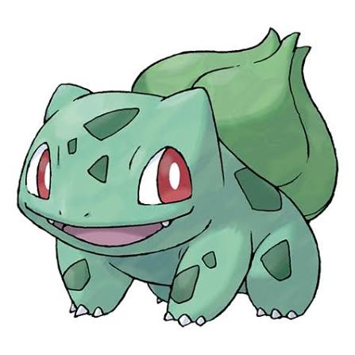

Bulbizarre

Type: plante / poison.
coûts: 3points.
pokémon défensif axée sur le soutiens et altèrnation de stats adverses.
Points forts: très polyvalent et bon sur la durée.
Points faibles: très lent.
évolutions: Herbizarre --> Florizarre
Salamèche

Type: feu
coûts: 3points
Pokémon Feu rapide et offensif. Il est assez fragile au début, mais devient beaucoup plus puissant en évoluant jusqu'à Dracaufeu.
Points fort: vitesse et attaque spécial
Points faibles: defense faible avec peu de pv
évolutions:reptincel --> dracofeu